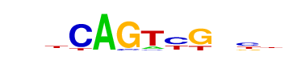
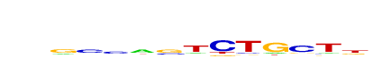

| p-value: | 1e-627 |
| log p-value: | -1.444e+03 |
| Information Content per bp: | 1.707 |
| Number of Target Sequences with motif | 1092.0 |
| Percentage of Target Sequences with motif | 7.17% |
| Number of Background Sequences with motif | 273.8 |
| Percentage of Background Sequences with motif | 0.82% |
| Average Position of motif in Targets | 38.4 +/- 17.0bp |
| Average Position of motif in Background | 48.4 +/- 31.0bp |
| Strand Bias (log2 ratio + to - strand density) | -0.4 |
| Multiplicity (# of sites on avg that occur together) | 1.02 |
| Motif File: | file (matrix) reverse opposite |
| Rank | Match Score | Redundant Motif | P-value | log P-value | % of Targets | % of Background | Motif file |
| 1 | 0.980 | 1e-586 | -1351.486797 | 7.79% | 1.09% | motif file (matrix) | |
| 2 | 0.946 | 1e-482 | -1111.421124 | 7.74% | 1.36% | motif file (matrix) | |
| 3 | 0.889 | 1e-386 | -891.018319 | 8.23% | 1.94% | motif file (matrix) | |
| 4 | 0.889 | 1e-341 | -786.608114 | 13.46% | 5.07% | motif file (matrix) | |
| 5 | 0.727 | 1e-334 | -770.466306 | 33.11% | 19.62% | motif file (matrix) | |
| 6 | 0.648 |  | 1e-274 | -632.649267 | 25.15% | 14.23% | motif file (matrix) |
| 7 | 0.705 | 1e-232 | -535.990270 | 15.34% | 7.49% | motif file (matrix) | |
| 8 | 0.616 | 1e-38 | -89.152695 | 0.22% | 0.01% | motif file (matrix) | |
| 9 | 0.773 | 1e-22 | -52.368573 | 2.68% | 1.58% | motif file (matrix) | |
| 10 | 0.692 |  | 1e-20 | -47.513886 | 0.17% | 0.01% | motif file (matrix) |
| 11 | 0.620 | 1e-18 | -43.360441 | 27.41% | 24.25% | motif file (matrix) |